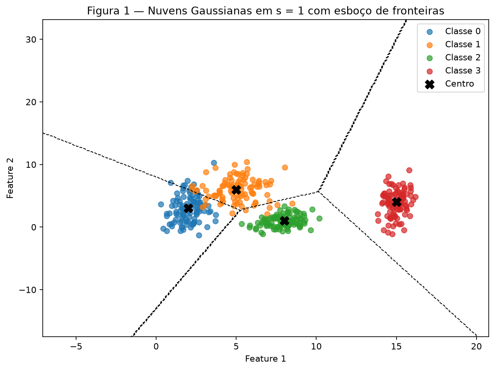
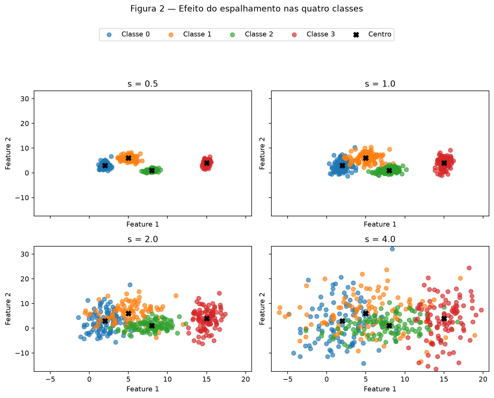
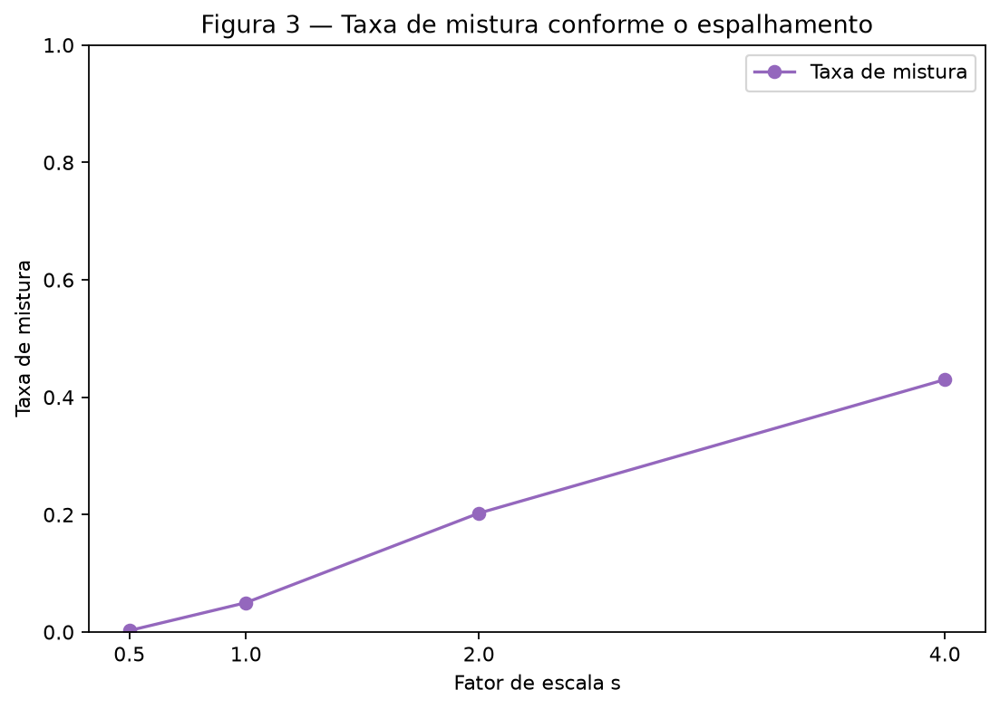
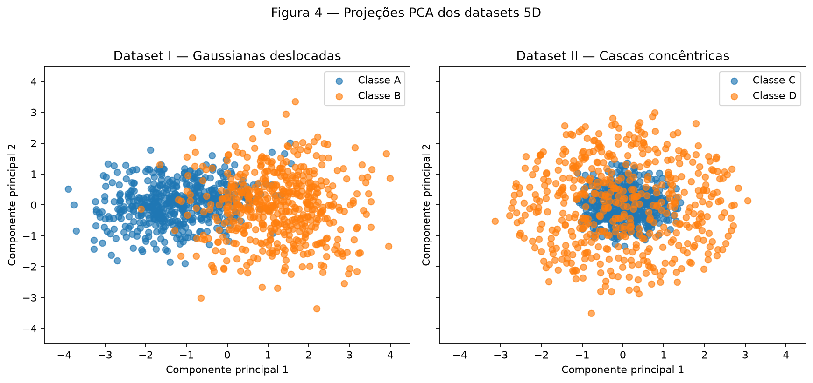
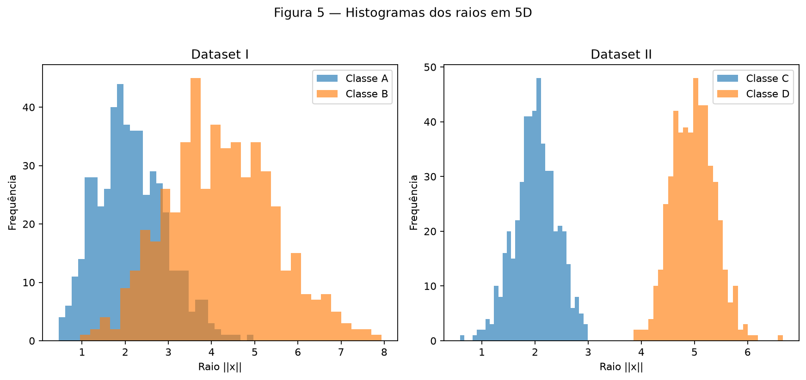
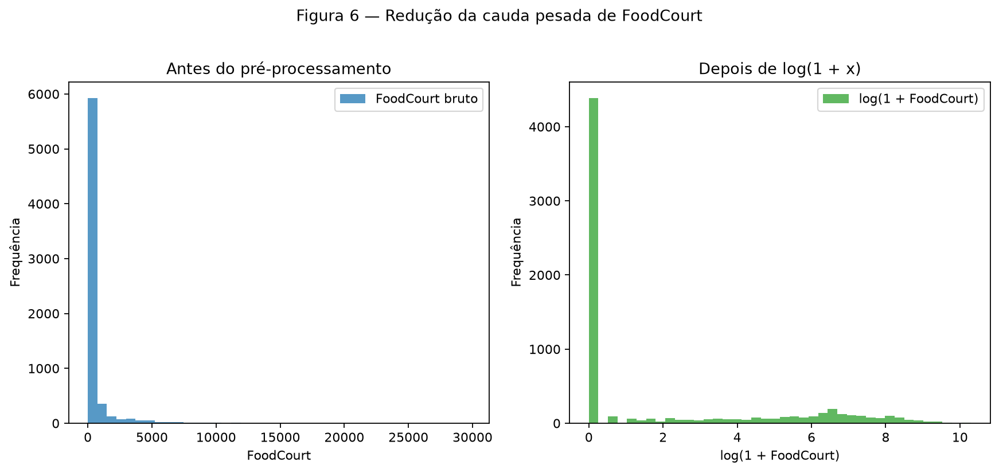

Atividade 1 — Dados
Este relatório e suas figuras são reproduzíveis pelo script em code/data_exercise.py. Com o arquivo do Kaggle salvo em data/spaceship-titanic/train.csv, execute:
Exercício 1
Nuvens de pontos: geometria e espalhamento em 2D
A — Gere as nuvens
Foram geradas quatro classes Gaussianas, com 100 pontos por classe (400 pontos no total). Uma única instância rng = np.random.default_rng(42) gera os ruídos. A Figura 1 usa o conjunto com s = 1.

Figura 1 — Nuvens Gaussianas em s = 1, seus centros e um esboço das fronteiras por centro mais próximo. As linhas tracejadas não são fronteiras aprendidas por um classificador.
B — Mais ou menos espalhado
O mesmo ruído normal padronizado de cada classe foi reutilizado em s = 0,5, 1, 2 e 4; somente o espalhamento mudou. Assim, a comparação isola o efeito de s.

Figura 2 — As quatro escalas de espalhamento com os mesmos limites nos eixos.
As seis razões de separação, \(r_{ij}=\frac{\|\mu_i-\mu_j\|}{(\bar{\sigma_i}+\bar{\sigma_j})}\), calculadas em s = 1, são:
| Par | \(r_{ij}\) |
|---|---|
| (0, 1) | 1,3258 |
| (0, 2) | 2,4802 |
| (0, 3) | 4,4960 |
| (1, 2) | 2,3800 |
| (1, 3) | 3,6422 |
| (2, 3) | 3,5422 |
O menor valor é \(r_{01}=1{,}3258\). Como as dispersões dobram em s = 2, ele se reduz à metade: \(0{,}6629\).
C — Análise
A taxa de mistura é a fração de pontos cujo centro mais próximo pertence a outra classe; não foi treinado classificador.
| Escala \(s\) | Taxa de mistura |
|---|---|
| 0,5 | 0,25% |
| 1,0 | 5,00% |
| 2,0 | 20,25% |
| 4,0 | 43,00% |

Figura 3 — A mistura aumenta de 0,25% para 43,00% quando o espalhamento cresce.
Em s = 1, há mistura principalmente entre as classes 0 e 1 (5,00% no conjunto todo). Uma única reta não separa quatro classes; um conjunto de fronteiras lineares pode delimitar grande parte das nuvens, mas não zera os erros na região sobreposta. O esboço da Figura 1 usa as mediatrizes entre centros como uma aproximação visual das fronteiras que uma rede poderia aprender.
Em s = 2, as classes 0 e 1 já têm \(r_{01}=0{,}6629<1\), a Figura 2 mostra sobreposição visível e a mistura chega a 20,25%. A partir de s = 2, perde-se separabilidade linear prática: as regiões das classes passam a se sobrepor e qualquer conjunto de retas necessariamente erra pontos nessa região. Ao aumentar s, essa região de erro inevitável cresce, chegando a 43,00% de mistura em s = 4. As fronteiras da Figura 1 são somente um esboço por centro mais próximo, e não fronteiras treinadas.
Exercício 2
Não linearidade em dimensões mais altas
A — Dataset I: gaussianas deslocadas
O Dataset I contém 500 amostras por classe, em 5 dimensões, geradas pelas médias e matrizes de covariância fornecidas. A distância entre os centros amostrais nos dados 5D originais (sem padronização) foi 3,3559.
B — Dataset II: cascas concêntricas
O Dataset II também contém 500 amostras por classe. Para cada amostra, uma direção em \(\mathbb{R}^5\) foi normalizada para norma 1 antes de receber raio normal com média 2 ou 5 e desvio 0,4. A distância entre os centros amostrais foi somente 0,2614, como esperado para cascas concêntricas.
C — Visualize e compare
Foi ajustado um StandardScaler e uma PCA independentes para cada dataset. Cada projeção tem shape (1000, 2).

Figura 4 — PCA dos dois conjuntos 5D; os dois painéis usam a mesma escala visual.
| Dataset | PC1 | PC2 | PC1 + PC2 |
|---|---|---|---|
| I — Gaussianas deslocadas | 50,58% | 15,69% | 66,28% |
| II — Cascas concêntricas | 21,13% | 20,55% | 41,68% |

Figura 5 — Distribuições dos raios das duas classes em cada dataset.
D — Análise
No Dataset I, os centros estão separados por 3,3559 e a PCA conserva 66,28% da variância nas duas primeiras componentes; entre os dois, é a projeção que melhor preserva a informação visualmente relevante à classificação. No Dataset II, as classes se diferenciam pelo raio, não pelo centro: os histogramas concentram-se próximo de 2 e 5.
Uma projeção PCA misturada não prova inseparabilidade no espaço original: ela reduz cinco dimensões para duas e pode descartar informação útil. Para as cascas, um separador não linear simples é a função radial:
Como os raios são aproximadamente 2 e 5, o limiar \(3{,}5^2=12{,}25\) separa as classes de forma natural: valores abaixo do limiar correspondem à casca interna e valores acima à externa. Não há um hiperplano que separe uma casca interna cercada por outra externa: um lado de qualquer hiperplano sempre contém pontos das duas cascas. Coletar mais dados não altera essa geometria radial; apenas a evidencia melhor.
Exercício 3
Preparação de dados reais para uma rede neural
A — Conheça os dados
Foi usado somente data/spaceship-titanic/train.csv. A tarefa é prever se um passageiro foi transportado para outra dimensão durante a colisão da nave; Transported=True representa esse evento. O conjunto possui shape (8693, 14), todas as 14 colunas oficiais, zero duplicatas exatas e alvo Transported presente. O alvo está balanceado: False representa 49,64% (4.315 linhas) e True, 50,36% (4.378 linhas); por isso, não foi aplicado balanceamento.
As features numéricas são Age, RoomService, FoodCourt, ShoppingMall, Spa e VRDeck; as categóricas são HomePlanet, CryoSleep, Destination e VIP. PassengerId, Cabin e Name foram descartadas por serem identificador, texto de alta cardinalidade ou campo não tratado nesta preparação.
| Coluna | Faltantes | Percentual |
|---|---|---|
| PassengerId | 0 | 0,00% |
| HomePlanet | 201 | 2,31% |
| CryoSleep | 217 | 2,50% |
| Cabin | 199 | 2,29% |
| Destination | 182 | 2,09% |
| Age | 179 | 2,06% |
| VIP | 203 | 2,34% |
| RoomService | 181 | 2,08% |
| FoodCourt | 183 | 2,11% |
| ShoppingMall | 208 | 2,39% |
| Spa | 183 | 2,11% |
| VRDeck | 188 | 2,16% |
| Name | 200 | 2,30% |
| Transported | 0 | 0,00% |
As despesas são assimétricas e possuem muitos zeros; seus valores no conjunto completo são:
| Despesa | Média | Mediana | Máximo |
|---|---|---|---|
| RoomService | 224,69 | 0,00 | 14.327 |
| FoodCourt | 458,08 | 0,00 | 29.813 |
| ShoppingMall | 173,73 | 0,00 | 23.492 |
| Spa | 311,14 | 0,00 | 22.408 |
| VRDeck | 304,85 | 0,00 | 24.133 |
Em todas as cinco despesas, a média é muito maior que a mediana (zero) e há máximos altos. Isso indica massa concentrada em zero e cauda longa à direita, justificando log1p sem excluir gastos extremos válidos.
B — Separe antes de transformar
O split estratificado foi realizado antes de aprender qualquer transformação: 80% para treino e 20% para teste, com random_state=42. Isso resultou em 6.954 linhas de treino e 1.739 de teste. Em particular, no treino bruto, FoodCourt tem média 452,6112 e mediana 0,0000. Imputadores, codificador e escalonador foram ajustados somente no treino para evitar data leakage. Se a mediana, categorias ou limites fossem calculados usando o teste, a preparação já incorporaria informação de dados que deveriam simular exemplos futuros.
C — Pré-processe
O pipeline é simples e é aplicado na mesma ordem ao treino e ao teste:
- Imputar mediana nas numéricas e moda nas categóricas, ajustadas no treino.
- Criar
TotalSpendapós a imputação, somando as cinco despesas. - Aplicar
log1papenas emRoomService,FoodCourt,ShoppingMall,SpaeVRDeck. - Escalonar
Age, as cinco despesas transformadas eTotalSpendpara[-1, 1], usando os limites do treino. - Aplicar one-hot nas quatro categóricas, com
handle_unknown="ignore"; as colunas codificadas permanecem em 0/1, compatíveis comtanh.
A mediana é robusta à cauda longa das despesas; a moda preserva a categoria mais comum para os campos categóricos. handle_unknown="ignore" gera zeros em todas as colunas daquele campo se uma categoria aparecer somente no teste, sem quebrar a transformação. log1p comprime os valores altos e reduz a chance de a ativação tanh saturar. Gastos extremos válidos não foram removidos. Após o one-hot, as matrizes finais são totalmente numéricas, não têm NaN, têm as mesmas 17 colunas na mesma ordem e possuem shapes (6954, 17) e (1739, 17).
D — Verifique e visualize

Figura 6 — Os mesmos valores não nulos de FoodCourt do treino antes e depois de log1p; a transformação reduz a cauda longa.
No treino, os valores finais ficam em [-1,0000, 1,0000]. No teste, o máximo é 1,1383. Isso é esperado: o MinMaxScaler conhece apenas os mínimos e máximos do treino; um gasto de teste acima do máximo de treino pode ultrapassar 1. Não foi feito clipping nem reajuste com o teste, pois ambos introduziriam uma decisão diferente da preparação definida.
A decisão com maior efeito no treinamento tende a ser a combinação de log1p e escalonamento das despesas. Sem ela, poucos gastos muito altos dominariam as entradas e levariam unidades tanh à saturação; com ela, a escala fica compatível com a ativação e as diferenças entre valores baixos continuam representadas.
Código reproduzível
"""Gera os resultados e as figuras da Atividade 1 — Dados.
Execute com:
python3 docs/exercises/data/code/data_exercise.py
O arquivo do Kaggle deve estar em data/spaceship-titanic/train.csv.
"""
from __future__ import annotations
from itertools import combinations
from pathlib import Path
import matplotlib
matplotlib.use("Agg")
import matplotlib.pyplot as plt
import numpy as np
import pandas as pd
from sklearn.decomposition import PCA
from sklearn.impute import SimpleImputer
from sklearn.model_selection import train_test_split
from sklearn.preprocessing import MinMaxScaler, OneHotEncoder, StandardScaler
RNG = np.random.default_rng(42)
REPO_ROOT = Path(__file__).resolve().parents[4]
DATA_PATH = REPO_ROOT / "data" / "spaceship-titanic" / "train.csv"
FIGURES_DIR = Path(__file__).resolve().parents[1] / "figures"
EXPECTED_COLUMNS = [
"PassengerId", "HomePlanet", "CryoSleep", "Cabin", "Destination", "Age", "VIP",
"RoomService", "FoodCourt", "ShoppingMall", "Spa", "VRDeck", "Name", "Transported",
]
SPENDING_COLUMNS = ["RoomService", "FoodCourt", "ShoppingMall", "Spa", "VRDeck"]
NUMERICAL_COLUMNS = ["Age", *SPENDING_COLUMNS]
CATEGORICAL_COLUMNS = ["HomePlanet", "CryoSleep", "Destination", "VIP"]
CLASS_COLORS = ["tab:blue", "tab:orange", "tab:green", "tab:red"]
def save_figure(
fig: plt.Figure, filename: str, layout_rect: tuple[float, float, float, float] | None = None
) -> None:
"""Salva uma figura e libera a memória ocupada por ela."""
FIGURES_DIR.mkdir(parents=True, exist_ok=True)
fig.tight_layout(rect=layout_rect)
fig.savefig(FIGURES_DIR / filename, dpi=160, bbox_inches="tight")
plt.close(fig)
def print_table(title: str, table: pd.DataFrame) -> None:
print(f"\n{title}")
print(table.to_string())
def generate_cloud_datasets() -> tuple[dict[float, tuple[np.ndarray, np.ndarray]], np.ndarray, np.ndarray]:
"""Gera quatro versões controladas das mesmas nuvens Gaussianas."""
means = np.array([[2.0, 3.0], [5.0, 6.0], [8.0, 1.0], [15.0, 4.0]])
stds = np.array([[0.8, 2.5], [1.2, 1.9], [0.9, 0.9], [0.5, 2.0]])
base_noise = [RNG.normal(size=(100, 2)) for _ in range(4)]
y = np.repeat(np.arange(4), 100)
datasets: dict[float, tuple[np.ndarray, np.ndarray]] = {}
for scale in (0.5, 1.0, 2.0, 4.0):
x = np.vstack([
means[class_id] + scale * stds[class_id] * base_noise[class_id]
for class_id in range(4)
])
datasets[scale] = (x, y.copy())
return datasets, means, stds
def mixing_rate(x: np.ndarray, y: np.ndarray, means: np.ndarray) -> float:
"""Fração dos pontos cujo centro mais próximo pertence a outra classe."""
distances = np.linalg.norm(x[:, np.newaxis, :] - means[np.newaxis, :, :], axis=2)
return float(np.mean(distances.argmin(axis=1) != y))
def exercise_1() -> dict[str, object]:
datasets, means, stds = generate_cloud_datasets()
x_s1, y_s1 = datasets[1.0]
all_points = np.vstack([x for x, _ in datasets.values()])
minimum = all_points.min(axis=0) - 1.0
maximum = all_points.max(axis=0) + 1.0
fig, ax = plt.subplots(figsize=(8, 6))
for class_id, color in enumerate(CLASS_COLORS):
points = x_s1[y_s1 == class_id]
ax.scatter(points[:, 0], points[:, 1], color=color, alpha=0.70, label=f"Classe {class_id}")
ax.scatter(means[:, 0], means[:, 1], color="black", marker="X", s=100, label="Centro", zorder=3)
grid_x, grid_y = np.meshgrid(
np.linspace(minimum[0], maximum[0], 300),
np.linspace(minimum[1], maximum[1], 300),
)
grid = np.column_stack([grid_x.ravel(), grid_y.ravel()])
nearest = np.linalg.norm(grid[:, np.newaxis, :] - means[np.newaxis, :, :], axis=2).argmin(axis=1)
ax.contour(
grid_x, grid_y, nearest.reshape(grid_x.shape), levels=[0.5, 1.5, 2.5],
colors="black", linestyles="--", linewidths=0.9,
)
ax.set(
title="Figura 1 — Nuvens Gaussianas em s = 1 com esboço de fronteiras",
xlabel="Feature 1", ylabel="Feature 2",
xlim=(minimum[0], maximum[0]), ylim=(minimum[1], maximum[1]),
)
ax.legend()
save_figure(fig, "figura_1.png")
fig, axes = plt.subplots(2, 2, figsize=(10, 8), sharex=True, sharey=True)
for ax, scale in zip(axes.flat, datasets):
x, y = datasets[scale]
for class_id, color in enumerate(CLASS_COLORS):
points = x[y == class_id]
ax.scatter(points[:, 0], points[:, 1], color=color, alpha=0.65, label=f"Classe {class_id}")
ax.scatter(means[:, 0], means[:, 1], color="black", marker="X", s=55, label="Centro")
ax.set_title(f"s = {scale:.1f}")
ax.set_xlabel("Feature 1")
ax.set_ylabel("Feature 2")
ax.set_xlim(minimum[0], maximum[0])
ax.set_ylim(minimum[1], maximum[1])
handles, labels = axes.flat[0].get_legend_handles_labels()
fig.legend(handles, labels, loc="upper center", ncol=5, bbox_to_anchor=(0.5, 0.94))
fig.suptitle("Figura 2 — Efeito do espalhamento nas quatro classes", y=0.99)
save_figure(fig, "figura_2.png", layout_rect=(0, 0, 1, 0.86))
ratios = []
for first, second in combinations(range(4), 2):
distance = np.linalg.norm(means[first] - means[second])
denominator = stds[first].mean() + stds[second].mean()
ratios.append({"Par": f"({first}, {second})", "r_ij": distance / denominator})
ratio_table = pd.DataFrame(ratios)
smallest = ratio_table.loc[ratio_table["r_ij"].idxmin()]
rates = {scale: mixing_rate(x, y, means) for scale, (x, y) in datasets.items()}
fig, ax = plt.subplots(figsize=(7, 5))
ax.plot(list(rates), list(rates.values()), marker="o", color="tab:purple", label="Taxa de mistura")
ax.set(
title="Figura 3 — Taxa de mistura conforme o espalhamento",
xlabel="Fator de escala s", ylabel="Taxa de mistura", xticks=list(rates), ylim=(0, 1),
)
ax.legend()
save_figure(fig, "figura_3.png")
print("\n=== EXERCÍCIO 1 ===")
print_table("Razões de separação em s = 1", ratio_table.set_index("Par"))
print("\nTaxas de mistura")
for scale, rate in rates.items():
print(f"s = {scale:.1f}: {rate:.4f} ({rate:.2%})")
print(f"Menor r_ij: {smallest['Par']} = {smallest['r_ij']:.4f}; em s = 2: {smallest['r_ij'] / 2:.4f}")
return {
"mixing_rates": rates,
"smallest_pair": str(smallest["Par"]),
"smallest_ratio": float(smallest["r_ij"]),
"ratio_table": ratio_table,
}
def pca_projection(x: np.ndarray) -> tuple[np.ndarray, np.ndarray]:
"""Padroniza e projeta um dataset 5D em duas componentes principais."""
scaled = StandardScaler().fit_transform(x)
pca = PCA(n_components=2)
return pca.fit_transform(scaled), pca.explained_variance_ratio_
def generate_shell(radius_mean: float) -> tuple[np.ndarray, np.ndarray]:
"""Gera uma casca radial de R^5 e devolve pontos e direções unitárias."""
directions = RNG.normal(size=(500, 5))
directions /= np.linalg.norm(directions, axis=1, keepdims=True)
radii = RNG.normal(radius_mean, 0.4, size=500)
return directions * radii[:, np.newaxis], directions
def exercise_2() -> dict[str, object]:
mean_a = np.zeros(5)
mean_b = np.full(5, 1.5)
covariance_a = np.array([
[1.0, 0.8, 0.1, 0.0, 0.0], [0.8, 1.0, 0.3, 0.0, 0.0],
[0.1, 0.3, 1.0, 0.5, 0.0], [0.0, 0.0, 0.5, 1.0, 0.2],
[0.0, 0.0, 0.0, 0.2, 1.0],
])
covariance_b = np.array([
[1.5, -0.7, 0.2, 0.0, 0.0], [-0.7, 1.5, 0.4, 0.0, 0.0],
[0.2, 0.4, 1.5, 0.6, 0.0], [0.0, 0.0, 0.6, 1.5, 0.3],
[0.0, 0.0, 0.0, 0.3, 1.5],
])
class_a = RNG.multivariate_normal(mean_a, covariance_a, size=500)
class_b = RNG.multivariate_normal(mean_b, covariance_b, size=500)
dataset_i = np.vstack([class_a, class_b])
labels_i = np.repeat([0, 1], 500)
class_c, directions_c = generate_shell(2.0)
class_d, directions_d = generate_shell(5.0)
assert np.allclose(np.linalg.norm(directions_c, axis=1), 1.0)
assert np.allclose(np.linalg.norm(directions_d, axis=1), 1.0)
dataset_ii = np.vstack([class_c, class_d])
labels_ii = np.repeat([0, 1], 500)
projection_i, variance_i = pca_projection(dataset_i)
projection_ii, variance_ii = pca_projection(dataset_ii)
limit = max(np.abs(projection_i).max(), np.abs(projection_ii).max()) + 0.5
fig, axes = plt.subplots(1, 2, figsize=(11, 5), sharex=True, sharey=True)
panels = [
(axes[0], projection_i, labels_i, "Dataset I — Gaussianas deslocadas", ("Classe A", "Classe B")),
(axes[1], projection_ii, labels_ii, "Dataset II — Cascas concêntricas", ("Classe C", "Classe D")),
]
for ax, projection, labels, title, class_names in panels:
for class_id, color, class_name in zip([0, 1], ["tab:blue", "tab:orange"], class_names):
points = projection[labels == class_id]
ax.scatter(points[:, 0], points[:, 1], color=color, alpha=0.65, label=class_name)
ax.set(title=title, xlabel="Componente principal 1", ylabel="Componente principal 2")
ax.set_xlim(-limit, limit)
ax.set_ylim(-limit, limit)
ax.legend()
fig.suptitle("Figura 4 — Projeções PCA dos datasets 5D", y=1.02)
save_figure(fig, "figura_4.png")
radii_i = (np.linalg.norm(class_a, axis=1), np.linalg.norm(class_b, axis=1))
radii_ii = (np.linalg.norm(class_c, axis=1), np.linalg.norm(class_d, axis=1))
fig, axes = plt.subplots(1, 2, figsize=(11, 5))
panels = [
(axes[0], radii_i, "Dataset I", ("Classe A", "Classe B")),
(axes[1], radii_ii, "Dataset II", ("Classe C", "Classe D")),
]
for ax, radii, title, class_names in panels:
ax.hist(radii[0], bins=30, alpha=0.65, color="tab:blue", label=class_names[0])
ax.hist(radii[1], bins=30, alpha=0.65, color="tab:orange", label=class_names[1])
ax.set(title=title, xlabel="Raio ||x||", ylabel="Frequência")
ax.legend()
fig.suptitle("Figura 5 — Histogramas dos raios em 5D", y=1.02)
save_figure(fig, "figura_5.png")
distance_i = np.linalg.norm(class_a.mean(axis=0) - class_b.mean(axis=0))
distance_ii = np.linalg.norm(class_c.mean(axis=0) - class_d.mean(axis=0))
print("\n=== EXERCÍCIO 2 ===")
print(f"Distância entre centros — Dataset I: {distance_i:.4f}")
print(f"Distância entre centros — Dataset II: {distance_ii:.4f}")
print(f"Variância explicada — Dataset I: PC1={variance_i[0]:.4f}, PC2={variance_i[1]:.4f}, soma={variance_i.sum():.4f}")
print(f"Variância explicada — Dataset II: PC1={variance_ii[0]:.4f}, PC2={variance_ii[1]:.4f}, soma={variance_ii.sum():.4f}")
return {
"distance_i": float(distance_i), "distance_ii": float(distance_ii),
"variance_i": variance_i, "variance_ii": variance_ii,
}
def load_spaceship_data() -> pd.DataFrame:
"""Carrega e valida o único arquivo real utilizado pela atividade."""
if not DATA_PATH.exists():
raise FileNotFoundError(
"Arquivo ausente. Baixe train.csv do Kaggle e salve-o em "
f"{DATA_PATH.relative_to(REPO_ROOT)}."
)
data = pd.read_csv(DATA_PATH)
if data.shape != (8693, 14):
raise ValueError(f"Shape inválido: esperado (8693, 14), encontrado {data.shape}.")
if list(data.columns) != EXPECTED_COLUMNS:
missing = sorted(set(EXPECTED_COLUMNS) - set(data.columns))
unexpected = sorted(set(data.columns) - set(EXPECTED_COLUMNS))
raise ValueError(f"Colunas inválidas. Ausentes: {missing}; inesperadas: {unexpected}.")
return data
def exercise_3() -> dict[str, object]:
data = load_spaceship_data()
missing = pd.DataFrame({
"Quantidade": data.isna().sum(),
"Percentual (%)": data.isna().mean().mul(100),
})
spending_stats = data[SPENDING_COLUMNS].agg(["mean", "median", "max"]).T
spending_stats.columns = ["Média", "Mediana", "Máximo"]
target_share = data["Transported"].value_counts(normalize=True).sort_index()
x_raw = data.drop(columns="Transported")
y = data["Transported"].astype(int)
x_train_raw, x_test_raw, y_train, y_test = train_test_split(
x_raw, y, test_size=0.2, stratify=y, random_state=42
)
assert len(x_train_raw) == 6954 and len(x_test_raw) == 1739
assert x_train_raw.index.intersection(x_test_raw.index).empty
assert y_train.mean() > 0 and y_test.mean() > 0
foodcourt_observed_train = x_train_raw["FoodCourt"].dropna()
foodcourt_train_mean = float(foodcourt_observed_train.mean())
foodcourt_train_median = float(foodcourt_observed_train.median())
numerical_imputer = SimpleImputer(strategy="median")
categorical_imputer = SimpleImputer(strategy="most_frequent")
train_numerical = pd.DataFrame(
numerical_imputer.fit_transform(x_train_raw[NUMERICAL_COLUMNS]),
columns=NUMERICAL_COLUMNS, index=x_train_raw.index,
)
test_numerical = pd.DataFrame(
numerical_imputer.transform(x_test_raw[NUMERICAL_COLUMNS]),
columns=NUMERICAL_COLUMNS, index=x_test_raw.index,
)
train_categorical = pd.DataFrame(
categorical_imputer.fit_transform(x_train_raw[CATEGORICAL_COLUMNS]),
columns=CATEGORICAL_COLUMNS, index=x_train_raw.index,
)
test_categorical = pd.DataFrame(
categorical_imputer.transform(x_test_raw[CATEGORICAL_COLUMNS]),
columns=CATEGORICAL_COLUMNS, index=x_test_raw.index,
)
# A soma é criada após a imputação para não tratar uma ausência como gasto zero.
train_numerical["TotalSpend"] = train_numerical[SPENDING_COLUMNS].sum(axis=1)
test_numerical["TotalSpend"] = test_numerical[SPENDING_COLUMNS].sum(axis=1)
for column in SPENDING_COLUMNS:
assert (train_numerical[column] >= 0).all() and (test_numerical[column] >= 0).all()
train_numerical[column] = np.log1p(train_numerical[column])
test_numerical[column] = np.log1p(test_numerical[column])
numeric_output_columns = ["Age", *SPENDING_COLUMNS, "TotalSpend"]
scaler = MinMaxScaler(feature_range=(-1, 1))
train_scaled = pd.DataFrame(
scaler.fit_transform(train_numerical[numeric_output_columns]),
columns=numeric_output_columns, index=x_train_raw.index,
)
test_scaled = pd.DataFrame(
scaler.transform(test_numerical[numeric_output_columns]),
columns=numeric_output_columns, index=x_test_raw.index,
)
encoder = OneHotEncoder(handle_unknown="ignore", sparse_output=False)
train_encoded_array = encoder.fit_transform(train_categorical)
test_encoded_array = encoder.transform(test_categorical)
encoded_columns = encoder.get_feature_names_out(CATEGORICAL_COLUMNS)
train_encoded = pd.DataFrame(train_encoded_array, columns=encoded_columns, index=x_train_raw.index)
test_encoded = pd.DataFrame(test_encoded_array, columns=encoded_columns, index=x_test_raw.index)
x_train_final = pd.concat([train_scaled, train_encoded], axis=1).astype(float)
x_test_final = pd.concat([test_scaled, test_encoded], axis=1).astype(float)
assert x_train_final.shape == (6954, 17)
assert x_test_final.shape == (1739, 17)
assert list(x_train_final.columns) == list(x_test_final.columns)
assert not x_train_final.isna().any().any() and not x_test_final.isna().any().any()
assert np.isfinite(x_train_final.to_numpy()).all() and np.isfinite(x_test_final.to_numpy()).all()
fig, axes = plt.subplots(1, 2, figsize=(11, 5))
axes[0].hist(foodcourt_observed_train, bins=40, color="tab:blue", alpha=0.75, label="FoodCourt bruto")
axes[0].set(title="Antes do pré-processamento", xlabel="FoodCourt", ylabel="Frequência")
axes[0].legend()
axes[1].hist(np.log1p(foodcourt_observed_train), bins=40, color="tab:green", alpha=0.75, label="log(1 + FoodCourt)")
axes[1].set(title="Depois de log(1 + x)", xlabel="log(1 + FoodCourt)", ylabel="Frequência")
axes[1].legend()
fig.suptitle("Figura 6 — Redução da cauda pesada de FoodCourt", y=1.02)
save_figure(fig, "figura_6.png")
print("\n=== EXERCÍCIO 3 ===")
print(f"Shape original: {data.shape}")
print(f"Duplicatas exatas: {data.duplicated().sum()}")
print("\nBalanço de Transported")
for label, share in target_share.items():
print(f"{label}: {share:.4f} ({share:.2%})")
print_table("Valores faltantes", missing)
print_table("Estatísticas das despesas no dataset completo", spending_stats)
print(f"\nFoodCourt no treino bruto: média={foodcourt_train_mean:.4f}, mediana={foodcourt_train_median:.4f}")
print(f"Split: treino={x_train_raw.shape}, teste={x_test_raw.shape}")
print(f"Shape final do treino: {x_train_final.shape}")
print(
"Faixa final — "
f"treino: [{x_train_final.to_numpy().min():.4f}, {x_train_final.to_numpy().max():.4f}], "
f"teste: [{x_test_final.to_numpy().min():.4f}, {x_test_final.to_numpy().max():.4f}]"
)
return {
"positive_share": float(target_share.loc[True]), "missing": missing,
"spending_stats": spending_stats, "foodcourt_train_mean": foodcourt_train_mean,
"foodcourt_train_median": foodcourt_train_median, "shape_train": x_train_final.shape,
"train_range": (float(x_train_final.to_numpy().min()), float(x_train_final.to_numpy().max())),
"test_range": (float(x_test_final.to_numpy().min()), float(x_test_final.to_numpy().max())),
}
def main() -> None:
"""Executa os três exercícios na ordem do relatório."""
exercise_1()
exercise_2()
exercise_3()
print("\nFiguras salvas em:", FIGURES_DIR.relative_to(REPO_ROOT))
if __name__ == "__main__":
main()
Resumo dos resultados
| # | Item | Seu valor |
|---|---|---|
| 1 | Taxa de mistura em \(s = 0{,}5\) | 0,25% |
| 2 | Taxa de mistura em \(s = 1{,}0\) | 5,00% |
| 3 | Taxa de mistura em \(s = 2{,}0\) | 20,25% |
| 4 | Taxa de mistura em \(s = 4{,}0\) | 43,00% |
| 5 | Menor \(r_{ij}\) em \(s = 1{,}0\), e o par | \(r_{01}=1{,}3258\) |
| 6 | Distância entre centros — Dataset I | 3,3559 |
| 7 | Distância entre centros — Dataset II | 0,2614 |
| 8 | Variância explicada PC1 + PC2 — Dataset I | 66,28% |
| 9 | Variância explicada PC1 + PC2 — Dataset II | 41,68% |
| 10 | Proporção da classe positiva em Transported |
50,36% |
| 11 | Média e mediana de FoodCourt no treino bruto |
452,6112 e 0,0000 |
| 12 | shape final da matriz de treino |
(6954, 17) |
| 13 | Mínimo e máximo após o escalonamento | treino: -1,0000 / 1,0000; teste: -1,0000 / 1,1383 |